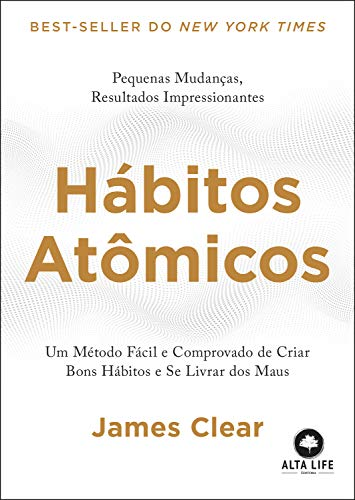
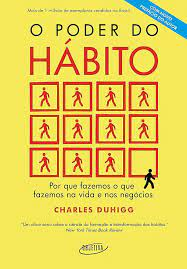
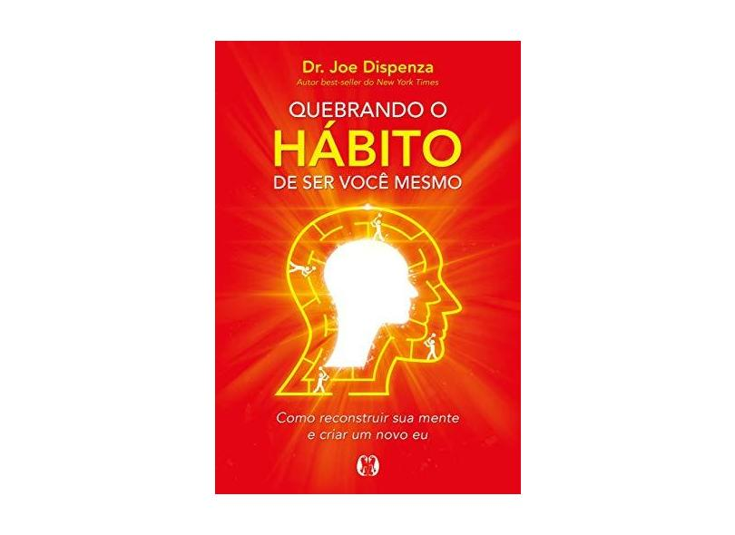

Habits 4 Life
A ferramenta que você precisa parar criar hábitos
Home
Dicas
Videos
Livros
Apps
Livros que podem ajudar a melhorar seu hábitos:
Hábitos Atômicos

compre o livro aqui
O Poder do Hábito

compre o livro aqui
Quebrando o hábito de ser você mesmo

compre o livro aqui